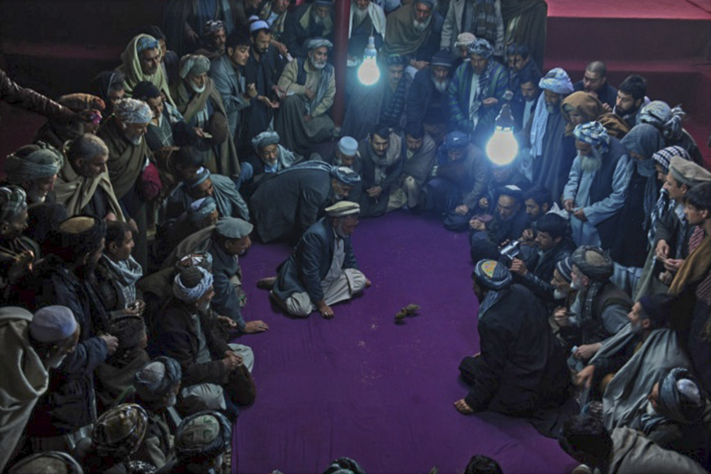

Ray Rasmussen
Edmonton, Alberta, Canada
Ringside
What do I think of Western Civilization? I think it would be a very good idea.
~ Mahatma Gandhi
When you call yourself an Indian or a Muslim or a Christian or a European, or anything else, you are being violent. Do you see why it is violent? Because you are separating yourself from the rest of mankind. When you separate yourself by belief, by nationality, by tradition, it breeds violence. So a man who is seeking to understand violence does not belong to any country, to any religion, to any political party or partial system; he is concerned with the total understanding of mankind.
~ Jiddu Krishnamurti

1. Sunday Morning
Internet
I scan a series of images from The Big Picture website. Robed Afghanis in the town of Mazar-I Sharif sit and stand in a small circle on a dirt floor. They’re leaning forward, eyes focused on the ring, calling out their bets. Bare light bulbs cast a muted glow on a white-bearded man who is prompting two quail to fight.
blood red
the winning bird’s
beak
2. Sunday Afternoon TV
Superbowl time. My friends sit in a semi-circle around the set, hands grasping beers, reaching for snacks, intent on the screen. I collect their bets – who will win and the score spread. The referee blows a whistle and the announcer shouts, “Kickoff!”
cheers and raised fists –
a player carried
from the field
3. Sunday Evening News
Sitting in a semi-circle, left- and right-wing political commentators present information about their own positions and those of their opponents that seem obviously embellished, if not outright false. I’m hoping that my side of the political continuum does a better job, that they show up their amoral opponents for the liars they are.
washing my hands
the face of a stranger
in the mirror
Notes:
Originally published in A Hundred Gourds, 2:4 September 2013.
Photography by Qais Usyan, “Afghan Spectators watch a quail fight in Mazar-I Sharif, Afghanistan.” Taken from “Afghanistan, November 2011,” The Big Picture Website. Quail fighting is a popular hobby and a gambling game in Afghanistan. Two birds are placed inside a circle and made to fight each other until one of the birds is declared the winner.
Boxing, Football, Hockey are popular in the western world and widely used for gambling. While there are rules, the violence inherent in these sports has been promoted by league owners and widely appreciated by fans. "The latest study on National Football League players brain damage has found that 99 percent of NFL players examined have Chronic Traumatic Encephalopathy (CTE). Taken from "Clinicopathological Evaluation of Chronic Traumatic Encephalopathy in Players of American Football," Journal of American Medical Association and Heal Naturally websites.
|